数学部分
Febr 24, 2023
目录
1.矩阵基础
2.罗德里戈旋转矩阵
3.投影矩阵和深度值变换
4.傅里叶变换和低通滤波
5.抗锯齿
6.三线性插值
7.光线与物体求交
8.路径追踪
主要来自101，空着的是觉得有点问题，留着以后写。
1.矩阵基础
在游戏编程中，矩阵基础最常用的就是坐标系的转换，假设我们知道A系为正交单位系，而B为某特殊坐标系，并且AB共享原点，其。
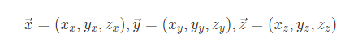 那么如果向量α在B坐标系中的坐标为(x,y,z),在A坐标系中的坐标为(x',y',z')，则
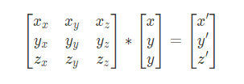 左边也就被称为B坐标系的变换，作用是将B坐标系下的坐标投射到正交单位坐标系中，而我们知道旋转变换本质上就是一种这样类型的变换，而旋转变换是一个正交矩阵，通过证明我们可以发现，正交坐标系的变换矩阵都是一个正交矩阵，也就是说其逆就是其转置。
但实际上游戏编程中并非所有变换都是线性变换或者齐次变换，这就导致了3D游戏中会用四维的向量，基于齐次变换原理多出一维来进行更简单的变换，对于点来说，第四维被设置为1，对于向量来说则为0（因为向量本身并没有位置的概念）。这个设定在齐次变换的作用下就保证了（点+向量）为（点），（向量+向量）为（向量），而（点+点）为这两个点的中点（由于它们的第四维相加成为2，齐次除法会把它们的前三维全部除以二）。
因此如果说两个坐标系的原点不同，我们还需要在矩阵外扩充一维来记录各轴的平移量，平移量就是A到B的向量。
2.罗德里戈旋转矩阵
罗德里戈旋转矩阵的输入是一个单位向量n，它表示旋转轴，以及一个角度α，它表示旋转的角度，矩阵带来的变换是把一个向量绕该轴旋转这个角度。
 其中I是单位矩阵，后面那一坨是n的叉积矩阵，具体的推导方式是先把需要旋转的向量v分解为平行于n和垂直于之的两个向量，前者在旋转中不会发生变化，而后者被分解到了垂直于n的平面中，我们可以规定该向量就是该平面的一轴，则另一轴可以用叉积表示，由于n本身是单位矩阵且与垂直向量垂直，叉积出的向量的模长会和垂直向量相等，相当于成为了一组基，然后只需要计算在这组基上的旋转即可，具体而言:
其中I是单位矩阵，后面那一坨是n的叉积矩阵，具体的推导方式是先把需要旋转的向量v分解为平行于n和垂直于之的两个向量，前者在旋转中不会发生变化，而后者被分解到了垂直于n的平面中，我们可以规定该向量就是该平面的一轴，则另一轴可以用叉积表示，由于n本身是单位矩阵且与垂直向量垂直，叉积出的向量的模长会和垂直向量相等，相当于成为了一组基，然后只需要计算在这组基上的旋转即可，具体而言: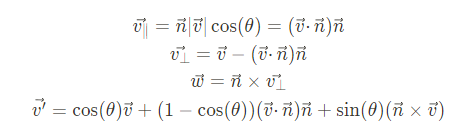
3.投影矩阵和深度值变换
在games101中我们其实已经了解到了投影矩阵的解法，投影矩阵本身是一个xy平面上的缩放变换附加上一个正交变换，我们还知道在齐次除法之前我们得到的点它的w分量设定为了-z，那么我们可以用同样的方法列方程：
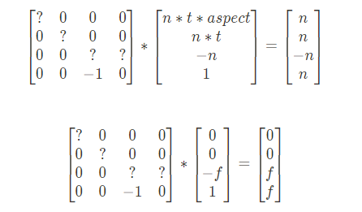 在这里n指近平面距离，f指远平面距离，t指tan(FOV/2)，aspect指摄像机视平面x和y的比值，显然右上角的点在视角空间的坐标是(n*t*aspect,n*t,-n,1)，最终会被映射到NDC坐标的(1,1,-1,1)位置，也就是齐次裁剪坐标的(n,n,-n,n)位置，z坐标之所以为-n是因为近平面在映射到裁剪空间后它的值应该是-1（因为越往摄像机z越小，同理，f是1）我们也就能解得一个
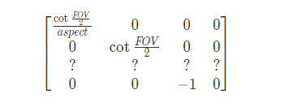 而第三行的值我们同样带入(0,0,-f,1)的式子来计算，解方程组得到最终的结果
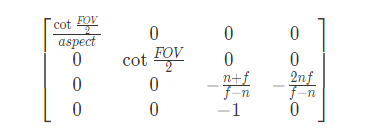 值得注意的是，我们在这里基于的理论是近平面和远平面的z值都是不变的（当然，这肯定是事实），但是这个变换并不是一个线性变换。
最后我们把变换得到的坐标除以w来得到NDC空间下的坐标，这个坐标依然是非线性的，并且在离近平面越近时变化率会越大，至于这是否正确——当你在观察世界上的事物时，近处物体移动同样的距离带来的感受肯定远比远处物体移动相同的距离更加直观。
在裁剪空间坐标基础上除w就能得到NDC坐标，而深度值就是NDC坐标所计算得到的
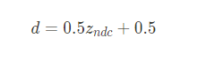 因此，深度值也可以重建出视角空间坐标
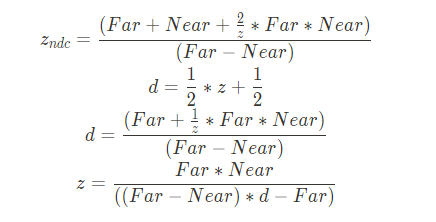 将这个公式得到的z再取反就是unity中LinearEyeDepth()的结果（实际在坐标上这里的z显然是负数，但是LinearEyeDepth()返回的结果是正数，说实话，不知道Unity为什么要这么做）。
屏幕坐标也是由NDC坐标得到，这里就不关z分量什么事了。
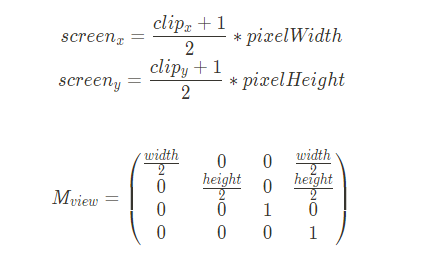
4.傅里叶变换和低通滤波
由于频域中的某波函数如果频率越高，它在同一时域段变化越快。
如果将图像看作频域、那么图像中的边缘部分就是高频信号，图像中的大色块部分就是低频信号，因此如果进行了低通滤波，就能得到一个弱化边缘的模糊效果，而实际上类似sobel算子卷积进行的就是这样的操作。
从频域可以解释为什么会产生锯齿效果以及各种摩尔纹现象，因为函数的采样率低于其频率本身所需采样率，因此采样得到了不同的函数。
如图，实际频率是后面的频率较高的函数，采样率是黑点的间隔，由于采样率不足以采样实际频率的函数，因此采样出了错误的函数，在频域转换为时域之后也得到了错误的结果。
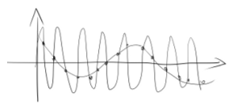 由于显示器的采样率有限（受制于分辨率），不可能完全还原实际图像的频域信息，因此在抗锯齿时常用的方法是将高频滤波掉，从而实现反走样，被称为奈奎斯特滤波。
5.MSAA（超采样抗锯齿）、FXAA（快速近似抗锯齿）、TAA（时间抗锯齿）
实际上就是每个采样点分为四个采样点，通过采样点的采样结果占4个点中的比例来给原采样点赋值，虽然提高了采样率，但这个采样率并没有被用到最后的结果中，所以依然是基于低通滤波的算法。
FXAA是直接对屏幕进行后处理，效果较差但很快。
TAA是MSAA中的采样点按不同的帧取不同的点并混合上一帧的结果，较快，效果也好，但是占用显存。
6.三线性插值
mipmap在图像缩小中起到一个区间数据结构的作用，然而实际上我们得到的所需要的纹理尺寸和原本尺寸的比例并不一定是2^n，因此只能找到与比例相邻的两个mipmap level，得到这两个mipmap level中该像素的双线性插值结果并对结果按mipmap level进行一个线性插值，称为三线性插值。
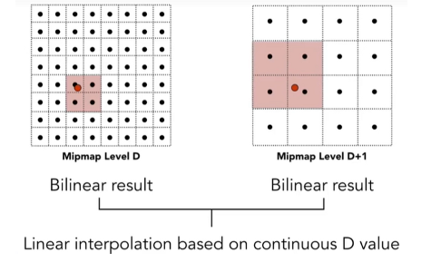
7.光线追踪-光线与物体求交
Boxes技术、BVH，详细用代码表达，基于区间数据结构，严格来说是算法部分吧。
Boxes技术是一个求光线与物体表面交点的算法，为了避免可能遍历场景中所有的的表面造成的巨大性能消耗，而采用的分块思想的算法，即求出每个物体的最小包围盒，如果光线与包围盒没有交点则光线与物体也没有交点。
光线和包围盒是否相交可以通过将三个维度分开判断，求出和每个轴上平面线的交点，一共是三个min和max，代表光线和该平面线相交的时间。
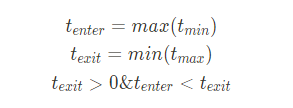 但是仅仅使用Box来分块在物体较多的时候复杂度依然低下，并且会出现退化成链的现象（所有box都和光线有交点或者无交点），于是采用BVH的方法进一步进行分块，即将所有物体装入大box，大box分为两个子节点，取中位数划分得到的两个物体数相同的小盒子，得到一个二叉树结构，只有叶子结点才是单个的物体，能够进行一个log数量的优化。
8.光线追踪-路径追踪
#路径追踪看的我一头雾水，等真正做到光追的时候再用心钻研一下吧，诶嘿嘿。
光追是一个基于物理渲染的方法，能够用来得到类似全局光照的效果，在迭代层数较多的时候几乎和照片无异，其核心是利用光的能量守恒和微积分理论计算光照。
首先我们整理一些基础运算概念。
对于球面来说，一个面积为A的有限平面对应的锥形角叫做立体角，其角度为omega=Ar^2，其中r是球的半径，而在球的角度上我们称球内垂线在垂直于水平面的平面上到该有限平面的夹角为theta，而在水平平面上该有限平面与水平轴向量的夹角为phi，则有
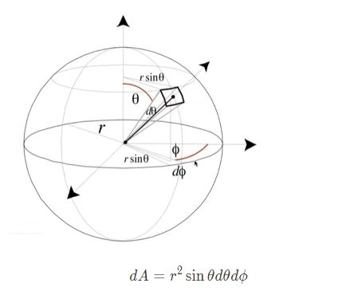 这个东西积分起来显然是4πr^2，因此弧度角的积分和也是4π。之所以有个sin\theta，是因为我们把图中这个方块看作两段弧的乘积，可以发现它水平面上的弧长是sin\theta d\phi，而垂直（斜面）上则是rd\theta，由于微分的原因我们把这个平面看成一个非曲面，乘起来就可以得到上面的公式。
由这个我们引入能量守恒上的式子，假设光照强度用Q表示，那么有如下物理量：
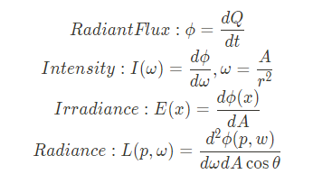 其中，Indensity表示了一个单位立体角上单位时间光源向外辐射出的能量大小，可以称为强度，由于是基于立体角，所以实际上并不会衰减，Irradiance表示一个单位表面接受到的光的能量，随着距离增大相同立体角对应的面积增大，irradiance会被衰减，Radiance则是从一个表面沿着一个立体角方向传播出去的能量，cos是用于计算角度投影。我们要去计算的是Irradiance和Radiance，并且
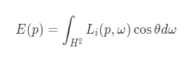 代表irradiance从半球上接收到的所有radiance之和。
但是由于每个表面的性质不同，同样的光镜面反射和漫反射所占的比例完全不同，于是我们定义了BRDF（Bidirectional Reflectance Distribution Function）项，代表一条从某方向进入的光线，它会朝各个方向辐射怎样的能量，输入入射角度和出射角度，返回输出radiance和输入irradiance的比例：
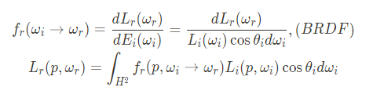 由于全局光照下物体的自发光也会被计算这里直接进行了加算，简单表示下可以解得K式为：
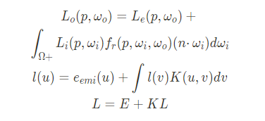 在这个式子中，我们把BRDF项作为已知项，$\cos\theta_i$当然也是已知项，自发光是自己定义的也算作已知项，因此唯一的未知量只有两个L。
通过泰勒展开解出L
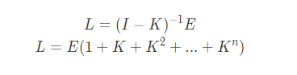 其中n表示弹射次数。
这里的代数转换并不是说原方程可以用泰勒展开解出，只是说明了这个方程收敛的性质，方便下面的递归求解。
但是算法不可能实现全面的采样积分，因此采用随机化的方法用蒙特卡洛积分的思想结合概率密度函数pdf（满足全积分是1，积分等于概率，乘上X等于期望）对光照进行采样，即首先用光照从摄像机照到某物体表面，然后在该表面上均匀取n条光线，而这些光线每次递归时不会再扩散出n条光线，并且每次递归都有一定地概率停止递归，最后再把计算的结果积分求和得到表面像素值。
这样下来，整个路径追踪的疑点就只有两个：①BRDF方程如何计算，②蒙特卡洛积分如何选择采样的光线，光线对应的pdf又是多少。
第一点放在PBR中BRDF方程里面讨论，第二点之后再说（这不是什么也没回答吗）
先写下蒙特卡洛积分：对一个不规则函数进行定积分，在其中按pdf随机取样，设定结果为(b-a)f(x)/p(i)，其中p表示当前采样点概率，进行多次采样保证sum p(i)=1，最后得到的结果就是一个定积分的拟合平均值，视作定积分的结果，最终可以写成。
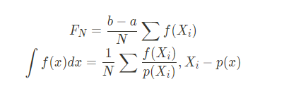 至于pdf，我们认为我们始终均匀地采样，那么在半球上进行采样pdf就是1/2pai，则有
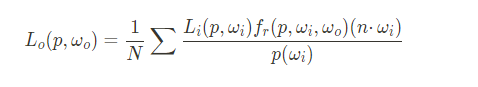 至此，计算机便可以用算法来表示原来的积分过程。
但是由于这样采样直接采样到光源方向的概率可能较低，所以我们会保险起见附加上一个直接在光源上进行的采样，光源上的有限面到表面上的立体角可以通过微分方程转换，θ’为光源法线和射线间的夹角，实际上也算是一种重要性采样。
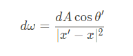 递归代码流程可以写成
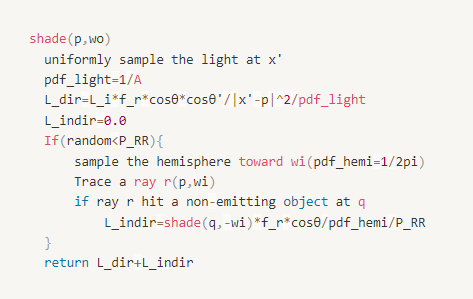